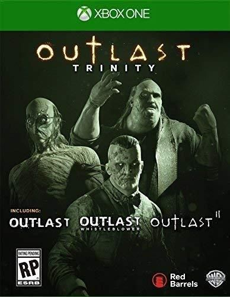

Outlast Trinity
Outlast es un videojuego de terror y supervivencia en primera persona desarrollado por Red Barrels. El juego gira en torno a un periodista de investigación independiente, Miles Upshur, que decide investigar un remoto hospital psiquiátrico llamado Mount Massive Asylum, ubicado en lo profundo de las montañas del condado de Lake, Colorado. El contenido descargable Outlast: Whistleblower se centra en Waylon Park, el hombre que llevó a Miles allí en primer lugar.
Precio: $39.99